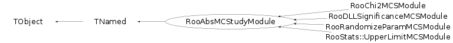

class RooAbsMCStudyModule: public TNamed
RooAbsMCStudyModule is a base class for add-on modules to RooMCStudy that can perform additional calculations on each generate+fit cycle managed by RooMCStudy This class can insert code to be executed before each generation step, between the generation and fitting step and after the fitting step. Any summary output variables declared in the RooDataSet exported through summaryData() is merged with the 'master' summary dataset in RooMCStudy Look at RooDLLSignificanceMCStudyModule for an example of an implementation
Function Members (Methods)
public:
| RooAbsMCStudyModule(const RooAbsMCStudyModule& other) | |
| RooAbsMCStudyModule(const char* name, const char* title) | |
| virtual | ~RooAbsMCStudyModule() |
| void | TObject::AbstractMethod(const char* method) const |
| virtual void | TObject::AppendPad(Option_t* option = "") |
| virtual void | TObject::Browse(TBrowser* b) |
| static TClass* | Class() |
| virtual const char* | TObject::ClassName() const |
| virtual void | TNamed::Clear(Option_t* option = "") |
| virtual TObject* | TNamed::Clone(const char* newname = "") const |
| virtual Int_t | TNamed::Compare(const TObject* obj) const |
| virtual void | TNamed::Copy(TObject& named) const |
| virtual void | TObject::Delete(Option_t* option = "")MENU |
| virtual Int_t | TObject::DistancetoPrimitive(Int_t px, Int_t py) |
| Bool_t | doInitializeInstance(RooMCStudy&) |
| virtual void | TObject::Draw(Option_t* option = "") |
| virtual void | TObject::DrawClass() constMENU |
| virtual TObject* | TObject::DrawClone(Option_t* option = "") constMENU |
| virtual void | TObject::Dump() constMENU |
| virtual void | TObject::Error(const char* method, const char* msgfmt) const |
| virtual void | TObject::Execute(const char* method, const char* params, Int_t* error = 0) |
| virtual void | TObject::Execute(TMethod* method, TObjArray* params, Int_t* error = 0) |
| virtual void | TObject::ExecuteEvent(Int_t event, Int_t px, Int_t py) |
| virtual void | TObject::Fatal(const char* method, const char* msgfmt) const |
| virtual void | TNamed::FillBuffer(char*& buffer) |
| virtual RooDataSet* | finalizeRun() |
| virtual TObject* | TObject::FindObject(const char* name) const |
| virtual TObject* | TObject::FindObject(const TObject* obj) const |
| virtual Option_t* | TObject::GetDrawOption() const |
| static Long_t | TObject::GetDtorOnly() |
| virtual const char* | TObject::GetIconName() const |
| virtual const char* | TNamed::GetName() const |
| virtual char* | TObject::GetObjectInfo(Int_t px, Int_t py) const |
| static Bool_t | TObject::GetObjectStat() |
| virtual Option_t* | TObject::GetOption() const |
| virtual const char* | TNamed::GetTitle() const |
| virtual UInt_t | TObject::GetUniqueID() const |
| virtual Bool_t | TObject::HandleTimer(TTimer* timer) |
| virtual ULong_t | TNamed::Hash() const |
| virtual void | TObject::Info(const char* method, const char* msgfmt) const |
| virtual Bool_t | TObject::InheritsFrom(const char* classname) const |
| virtual Bool_t | TObject::InheritsFrom(const TClass* cl) const |
| virtual Bool_t | initializeInstance() |
| virtual Bool_t | initializeRun(Int_t) |
| virtual void | TObject::Inspect() constMENU |
| void | TObject::InvertBit(UInt_t f) |
| virtual TClass* | IsA() const |
| virtual Bool_t | TObject::IsEqual(const TObject* obj) const |
| virtual Bool_t | TObject::IsFolder() const |
| Bool_t | TObject::IsOnHeap() const |
| virtual Bool_t | TNamed::IsSortable() const |
| Bool_t | TObject::IsZombie() const |
| virtual void | TNamed::ls(Option_t* option = "") const |
| void | TObject::MayNotUse(const char* method) const |
| virtual Bool_t | TObject::Notify() |
| void | TObject::Obsolete(const char* method, const char* asOfVers, const char* removedFromVers) const |
| static void | TObject::operator delete(void* ptr) |
| static void | TObject::operator delete(void* ptr, void* vp) |
| static void | TObject::operator delete[](void* ptr) |
| static void | TObject::operator delete[](void* ptr, void* vp) |
| void* | TObject::operator new(size_t sz) |
| void* | TObject::operator new(size_t sz, void* vp) |
| void* | TObject::operator new[](size_t sz) |
| void* | TObject::operator new[](size_t sz, void* vp) |
| RooAbsMCStudyModule& | operator=(const RooAbsMCStudyModule&) |
| virtual void | TObject::Paint(Option_t* option = "") |
| virtual void | TObject::Pop() |
| virtual void | TNamed::Print(Option_t* option = "") const |
| virtual Bool_t | processAfterFit(Int_t) |
| virtual Bool_t | processBeforeGen(Int_t) |
| virtual Bool_t | processBetweenGenAndFit(Int_t) |
| virtual Int_t | TObject::Read(const char* name) |
| virtual void | TObject::RecursiveRemove(TObject* obj) |
| void | TObject::ResetBit(UInt_t f) |
| virtual void | TObject::SaveAs(const char* filename = "", Option_t* option = "") constMENU |
| virtual void | TObject::SavePrimitive(ostream& out, Option_t* option = "") |
| void | TObject::SetBit(UInt_t f) |
| void | TObject::SetBit(UInt_t f, Bool_t set) |
| virtual void | TObject::SetDrawOption(Option_t* option = "")MENU |
| static void | TObject::SetDtorOnly(void* obj) |
| virtual void | TNamed::SetName(const char* name)MENU |
| virtual void | TNamed::SetNameTitle(const char* name, const char* title) |
| static void | TObject::SetObjectStat(Bool_t stat) |
| virtual void | TNamed::SetTitle(const char* title = "")MENU |
| virtual void | TObject::SetUniqueID(UInt_t uid) |
| virtual void | ShowMembers(TMemberInspector& insp) |
| virtual Int_t | TNamed::Sizeof() const |
| virtual void | Streamer(TBuffer& b) |
| void | StreamerNVirtual(TBuffer& b) |
| virtual void | TObject::SysError(const char* method, const char* msgfmt) const |
| Bool_t | TObject::TestBit(UInt_t f) const |
| Int_t | TObject::TestBits(UInt_t f) const |
| virtual void | TObject::UseCurrentStyle() |
| virtual void | TObject::Warning(const char* method, const char* msgfmt) const |
| virtual Int_t | TObject::Write(const char* name = 0, Int_t option = 0, Int_t bufsize = 0) |
| virtual Int_t | TObject::Write(const char* name = 0, Int_t option = 0, Int_t bufsize = 0) const |
protected:
| RooArgSet* | allDependents() |
| Bool_t | binGenData() |
| RooArgSet* | dependents() |
| virtual void | TObject::DoError(int level, const char* location, const char* fmt, va_list va) const |
| Bool_t | extendedGen() |
| RooArgSet* | fitInitParams() |
| RooAbsPdf* | fitModel() |
| const char* | fitOptions() |
| RooLinkedList* | fitOptList() |
| RooArgSet* | fitParams() |
| RooAbsGenContext* | genContext() |
| RooArgSet* | genInitParams() |
| RooAbsPdf* | genModel() |
| RooArgSet* | genParams() |
| const RooDataSet* | genProtoData() |
| RooAbsData* | genSample() |
| void | TObject::MakeZombie() |
| RooRealVar* | nllVar() |
| Double_t | numExpGen() |
| RooArgSet* | projDeps() |
| Bool_t | randProto() |
| RooFitResult* | refit(RooAbsData* inGenSample = 0) |
| Bool_t | verboseGen() |
Data Members
public:
| enum TObject::EStatusBits { | kCanDelete | |
| kMustCleanup | ||
| kObjInCanvas | ||
| kIsReferenced | ||
| kHasUUID | ||
| kCannotPick | ||
| kNoContextMenu | ||
| kInvalidObject | ||
| }; | ||
| enum TObject::[unnamed] { | kIsOnHeap | |
| kNotDeleted | ||
| kZombie | ||
| kBitMask | ||
| kSingleKey | ||
| kOverwrite | ||
| kWriteDelete | ||
| }; |
protected:
| TString | TNamed::fName | object identifier |
| TString | TNamed::fTitle | object title |
private:
| RooMCStudy* | _mcs | Pointer to RooMCStudy object module is attached to |
Class Charts
{kind=link}
{kind=link}
{kind=link}
{kind=link}

Function documentation
Bool_t doInitializeInstance(RooMCStudy& )
Store reference to RooMCStudy object that this module relates to and call internal module initialization function
Bool_t initializeInstance()
Initializer called immediately after attachment to RooMCStudy object and initialization of module base class
RooDataSet* finalizeRun()
Method called at the end of each RooMCStudy run. If a RooDataSet is returned, it must have a length equal to the number of toy experiments performed and will merged with the fitpar dataset of RooMCStudy.
Bool_t processBeforeGen(Int_t )
Method called after resetting of generator parameters to initial values and before call to generator context Any modifications to generator parameters will affect next generation operation (only)
Bool_t processBetweenGenAndFit(Int_t )
Method called after generation of toy data sample and resetting of fit parameters to initial values and before actual fit is performed. Any modifications to fit parameters will apply to next fit operation. Note that setConstant flag of fit parameters are not explicitly reset by RooMCStudy, so any changes made to these flags here will persist
RooFitResult* refit(RooAbsData* inGenSample = 0)
Interface methods to RooMCStudy objects, which are only functional after module has been attached to a RooMCStudy object
RooAbsGenContext* genContext()
Accessor for generator context, generator parameters, prototype data and projected dependents
RooArgSet* dependents()
Accessors for fit observables, fit model, current and initial fit parameters and NLL value